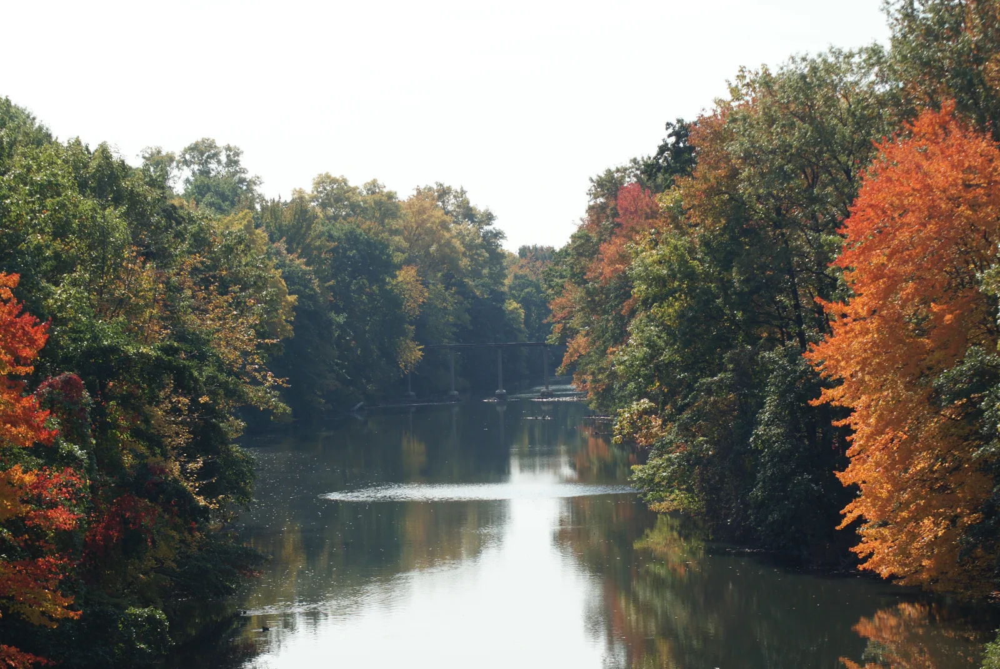
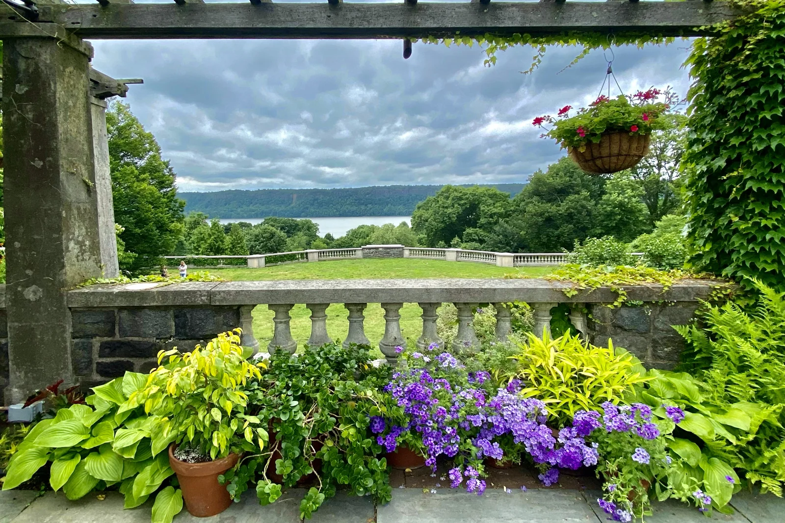

Neighborhood Guides
Bronx River Plans for September 11–14
A park meeting, a paddle cleanup and a few ways to lend a hand.
From the desk
Ideas for a day out, with the practical details included.

Neighborhood Guides
A park meeting, a paddle cleanup and a few ways to lend a hand.
Neighborhood Guides
A waterfront outing with a chance to get involved.

Neighborhood Guides
Gardens, art and a little breathing room, without an admission charge.
Neighborhood Guides
A few practical checks for a more comfortable trip.